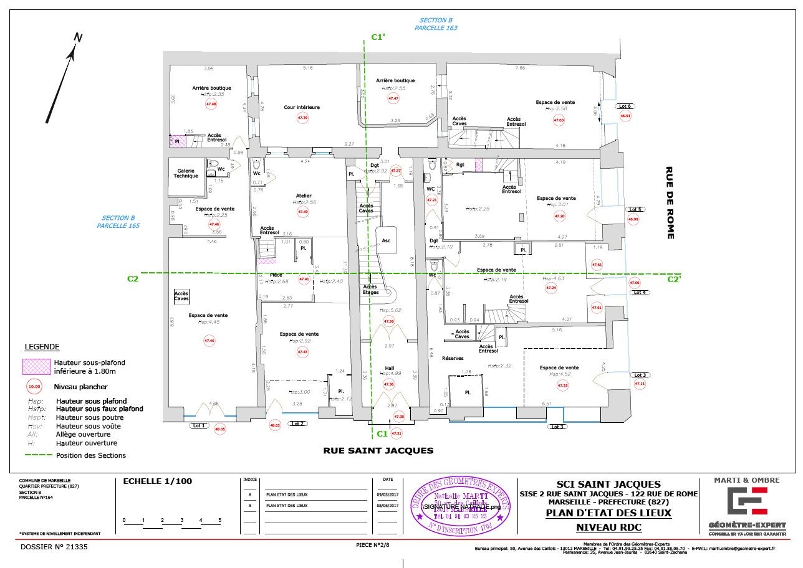
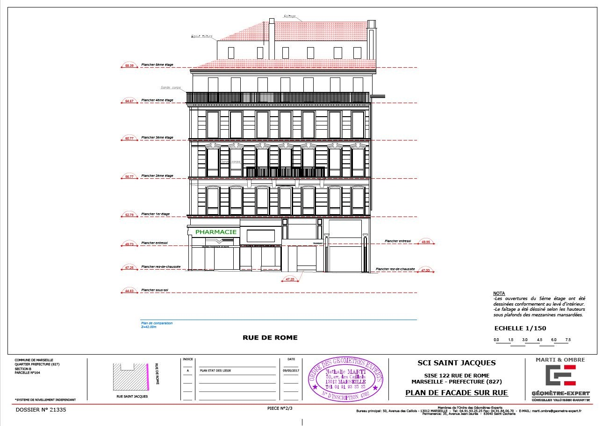

Vous souhaitez réhabiliter ou restructurer votre habitation ?
Nous vous accompagnons dans la réalisation de votre projet en réalisant:
• Un plan d’état des lieux intérieur ou plan d’architecture.
• Un plan de façade.
• Un plan de coupe ou plan de section.
• Un plan topographique partiel s’il s’agit d’une extension.
Suivant la précision voulue, nous pouvons réaliser l’ensemble des relevés à l’aide d’un Scanner 3D.
Cela nous permet de mesurer précisément des bâtiments complexes, et d’acquérir l’ensemble des données géométrique et visuelle du bâtiment.
Une modélisation viewer peut vous être livrer pour aider votre propre analyse et votre travail collaboratif.
Le relevé d’état des lieux permet d’obtenir des plans précis de votre bien.
Il permet de positionner et de dimensionner les murs porteurs, les ouvertures, les poutres, les hauteurs sous plafond, les niveaux de plancher, ...
Il pourra également servir pour définir la superficie plancher, la superficie habitable...

Le plan de façade est établi pour connaître l’aspect et la structure de la façade existante avec l’indication des ouvertures, des modenatures, ...
Il peut être demandé les éléments d’ornementation, les conduits accrochés à la façade et la nature des matériaux.
